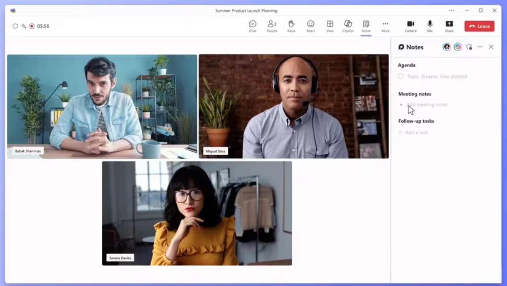

Lautaro Martínez se comparó con Haaland y Mbappé: "Puedo sentarme en la misma mesa"

Crean una secretaria que resuelve todo con inteligencia artificial, esto es Team Copilot
Un iceberg del tamaño de la isla de Malta se desprendió de una plataforma en la Antártida
Economia
Becas Progresar: de cuánto son en mayo 2024 y hasta cuándo se pueden solicitar
El dólar blue da un nuevo salto y escala a $ 1.230: ¿por qué sigue subiendo?
Politica
El Gobierno considera que el conflicto con España no afecta las negociaciones diplomáticas con la Unión Europea
Pullaro y Kicillof en Rosario: "El narcotráfico no entiende de límites provinciales ni banderías políticas"